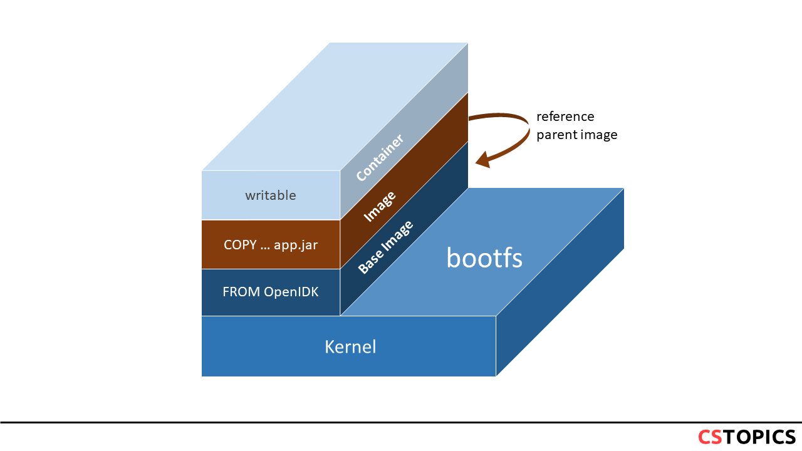
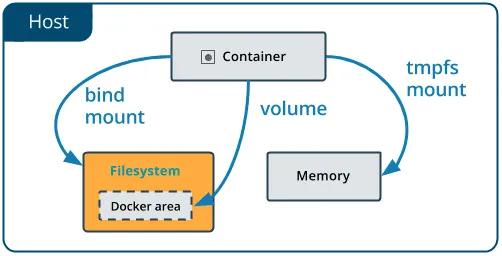

第1章：Docker 核心架构
Docker 是一种操作系统级别的虚拟化技术，它通过 Linux 内核的多项特性实现进程间的软隔离，而非传统虚拟机的硬件级虚拟化。理解 Docker 的核心架构，是掌握容器技术的第一步。
Docker 的四根柱子
Docker 的核心技术基于 Linux 内核的三大特性，加上一个标准化的容器格式：
1. Namespace（命名空间）—— 隔离
Namespace 是 Linux 内核提供的资源隔离机制，Docker 利用它为每个容器创建独立的运行环境。Docker 使用的 Namespace 包括：
Namespace
隔离内容
说明
PID 进程 ID
容器内的进程有独立的 PID 空间
NET 网络
独立的网络栈、IP 地址、端口
MNT 文件系统挂载点
独立的文件系统视图
UTS 主机名和域名
容器可以有自己的主机名
IPC 进程间通信
独立的信号量、消息队列
USER 用户和用户组
容器内的 root 可以映射为宿主机的普通用户
2. Control Group（cgroup）—— 资源限制
cgroup 负责限制和监控容器的资源使用，包括：
CPU ：限制 CPU 使用时间和核心数内存 ：限制内存使用量，超出限制时触发 OOM磁盘 I/O ：限制读写速率网络带宽 ：限制网络流量
3. UnionFS（联合文件系统）—— 分层存储
UnionFS 是 Docker 镜像和容器文件系统的基础，它允许将多个目录挂载到同一个虚拟文件系统下，实现镜像的分层存储和共享。
Docker 将 Namespace、cgroup 和 UnionFS 封装成标准化的容器格式，最初使用 LXC，后来替换为自研的 libcontainer（现已演进为 runc）。
容器 vs 虚拟机
Docker 与传统虚拟机（Hypervisor）的核心区别在于隔离层级：
特性
Docker 容器
虚拟机
隔离方式 进程级软隔离
硬件级虚拟化
内核 共享宿主机内核
每个 VM 独立内核
启动速度 秒级
分钟级
资源开销 极低
较高
镜像大小 MB 级
GB 级
密度 单机可运行数百个容器
单机通常数十个 VM
Hypervisor 总是起多个内核，而 Docker 共享宿主机内核，这是两者最本质的区别。Docker 寻求的解决方案不是虚拟化，而是进程间的软隔离。
Docker 的一等公民
Docker 中有四种核心资源对象，它们都可以被命名：
Container（容器/服务） ：镜像的运行实例Image（镜像） ：容器的只读模板Volume（数据卷） ：持久化数据存储Network（网络） ：容器间通信的虚拟网络
在 Docker 中，服务名和容器名都可以代替 IP 地址进行通信。
Docker 架构演进
Docker 的设计者对基于 Docker 构建的软件架构有清晰的演进思路：
1 Container → Service → Swarm → Stack
一个 Container = 一个进程的运行实例一个 Service = 一个镜像的多个运行时实例一个 Stack = 可以被编排在一起的多个服务，它们共享网络、数据卷等依赖Swarm = 将一池子容器变成一个逻辑上的 Docker 主机
这种架构演进体现了 Docker 从单机容器化到分布式编排的发展路径。
Docker Engine 的 C/S 架构
Docker Engine 采用经典的客户端-服务器（C/S）架构，由三个主要组件构成：
Docker CLI（客户端）
Docker CLI 是用户与 Docker 交互的命令行工具。它接收用户的命令（如 docker run、docker build），并将其转换为 REST API 调用发送给 Docker 守护进程。
Docker Daemon（守护进程）
Docker 守护进程（dockerd）是 Docker Engine 的核心组件，负责：
监听 Docker API 请求
管理镜像、容器、网络、数据卷等对象
处理容器生命周期
与 containerd 和 runc 交互
REST API
REST API 提供了标准的 HTTP 接口，允许第三方程序与 Docker 守护进程通信。Docker CLI、Docker Compose、各种管理工具都通过这个 API 与 Docker 交互。
1 2 3 4 5 6 7 8 9 10 11 12 13 14 15 16 ┌─────────────┐REST API
OCI 标准
为了促进容器技术的标准化和互操作性，Docker 联合其他厂商成立了开放容器倡议（Open Container Initiative，OCI），并制定了两个核心规范：
Runtime Specification（运行时规范）
定义了容器的运行时配置和生命周期管理，包括容器的文件系统 bundle 格式、创建/启动/停止/删除操作、状态查询、隔离和资源限制配置。
Image Specification（镜像规范）
定义了容器镜像的格式和结构，包括镜像的清单（manifest）格式、配置（config）格式、层（layer）的存储和寻址方式、内容寻址存储（CAS）机制。
OCI 标准的核心实现：
runc ：OCI 运行时规范的参考实现，负责容器的实际创建和运行containerd ：工业级的容器运行时，负责镜像管理和容器生命周期管理
通过遵循 OCI 标准，Docker 实现了与其他容器运行时（如 Podman、CRI-O）的互操作性，避免了厂商锁定。
第2章：镜像与分层存储
Docker 镜像是容器化技术的核心概念，理解镜像的分层存储机制对于优化镜像大小、提高构建效率至关重要。
联合文件系统（UnionFS）
Docker 镜像采用联合文件系统（UnionFS）实现分层存储。一个 Docker 镜像由多个只读层（read-only layers）叠加而成，每一层代表 Dockerfile 中的一个指令。
1 2 3 4 5 6 7 8 9 10 11 ┌─────────────────────┐4 (CMD ) │ 3 (COPY ) │ 2 (RUN ) │ 1 (FROM ) │
每个镜像层都是一个独立的文件系统，包含了该层对应指令产生的所有文件和目录变更。
删除文件的真相
在 UnionFS 中，"删除"一个文件并不会真正从下层中移除它，而是在上层创建一个 whiteout 文件，标记该文件已被删除。即使我们在上层"删除"了某个文件，该文件仍然存在于下层中，镜像大小不会减小。
因此，最佳实践是在同一个 RUN 指令中完成安装和清理：
1 2 3 4 RUN apt-get update && \ apt-get install -y vim && \ apt-get clean && \ rm -rf /var/lib/apt/lists/*
容器的读写层
当容器启动时，Docker 会在镜像的顶部添加一个读写层（thin RW layer）。所有的写操作都发生在这个可写层中。
多个容器可以基于同一个镜像启动，它们共享底层的只读镜像层，但各自拥有独立的读写层。这种设计带来了存储效率、启动速度和内存效率的巨大优势。
Copy On Write（写时复制）策略
Docker 使用 COW 策略来优化性能和空间利用率：
读取文件 ：直接从下层的只读层读取修改文件 ：先将文件从只读层复制到读写层，再在读写层中修改删除文件 ：在读写层中创建 whiteout 文件
通常，应该让容器自己的 writable layer 变得非常薄——所谓的 thin RW layer。
存储驱动
Docker 通过存储驱动（Storage Driver）来实现 UnionFS 的功能。
常见存储驱动
存储驱动
特点
适用场景
overlay2 当代默认驱动，性能优异
生产环境推荐
overlay overlay2 的前身
旧系统兼容
aufs 最早的存储驱动，稳定
旧系统兼容
devicemapper 块级存储
RHEL/CentOS 旧版本
btrfs 文件系统级支持
需要底层文件系统支持
ZFS 企业级文件系统
需要底层文件系统支持
存储驱动选择优先级
1 btrfs/zfs → overlay2 → overlay → aufs/devicemapper
在当代，默认的存储驱动总是 overlay2，而以前则是 aufs。
容器大小
docker ps -s 命令可以显示容器的磁盘使用情况，包含两个大小指标：
SIZE ：容器读写层的大小VIRTUAL SIZE ：镜像只读层的大小 + 容器读写层的大小
镜像层次存储位置
Docker 将镜像和容器数据存储在 /var/lib/docker/ 目录下：
1 ls /var/lib/docker/aufs/layers

查看镜像层次
1 docker history nginx:latest
第3章：容器生命周期
理解容器的生命周期是有效管理容器的关键。Docker 容器从创建到销毁经历多个状态，每个状态都有其特定的用途和转换条件。
容器状态机
状态
触发操作
说明
Created docker create容器已创建但未启动，仅初始化文件系统层
Running docker start / docker run容器正在运行，进程处于活动状态
Paused docker pause容器进程被暂停，CPU 暂停但内存保留（cgroup freezer）
Stopped docker stop容器进程正常终止（发送 SIGTERM，等待优雅退出）
Exited 进程结束 / docker kill
容器进程强制终止（SIGKILL）或自行退出
Restarting docker restart容器正在重启（先 stop 再 start）
stop vs pause 的核心区别
特性
docker stop
docker pause
进程状态 完全终止
冻结（暂停）
资源释放 释放 CPU、内存、PID 等
仅释放 CPU，内存保留
数据持久性 读写层保留（需手动删除容器）
所有状态（包括内存）保留
恢复速度 慢（需重新启动进程）
快（从冻结点即时恢复）
信号处理 触发 SIGTERM/SIGKILL
无信号，直接冻结
恢复方式 docker startdocker unpause
恢复后行为 从 ENTRYPOINT 重新开始
从冻结点继续
底层机制 SIGTERM → 等待 → SIGKILL
cgroup freezer
docker stop 的工作原理
向容器的主进程（PID 1）发送 SIGTERM 信号
等待 10 秒（默认）让进程优雅退出
如果进程未退出，发送 SIGKILL 强制终止
docker pause / unpause 的工作原理
通过 cgroup 的 freezer 子系统冻结/解冻容器内的所有进程，属于内核级操作，完全透明且高效。
stop 后 start 的行为
重新启动原来的进程（使用原有的 ENTRYPOINT 和 CMD 配置）
不重新初始化文件系统 ：容器读写层中的所有文件保持不变已写入的数据仍然存在
1 2 3 4 5 6 7 docker run --name test -it alpine sh -c "echo '初始日志' > /log.txt && cat /log.txt" test test exec test cat /log.txt rm -f test test -it alpine cat /log.txt
后台运行容器的陷阱
直接使用 docker run -d 启动容器时，容器可能会立即退出：
1 docker run -d ubuntu:20.04
原因：没有 -t 的 unattached 状态下，bash 会因为没有交互式终端而立即退出。
正确用法：
1 2 3 4 5 6 7 8 tail -f /dev/nullexec -it <container_id> /bin/bash
docker exec vs docker attach
特性
docker exec
docker attach
创建新进程 是
否
连接到现有进程 否
是（连接到 PID 1）
退出后容器状态 不影响
可能导致容器退出
使用场景 调试、执行命令
查看主进程输出
注意 ：使用 docker attach 时，如果主进程是 bash，使用 Ctrl+D 退出会导致容器退出。应该使用 Ctrl+P + Ctrl+Q 来分离而不退出。
CMD 与 ENTRYPOINT
CMD 和 ENTRYPOINT 都是容器命令化工具 ，让容器像可执行文件一样工作，接受参数，产生特定的输出。
CMD 指令
CMD 提供容器启动时的默认命令，会被 docker run 结尾的参数覆盖 ：
1 2 3 echo "hello"
ENTRYPOINT 指令
ENTRYPOINT 定义容器的入口点，不会被覆盖 ，docker run 结尾的参数会作为 ENTRYPOINT 的参数：
1 2 3
CMD 与 ENTRYPOINT 的关系
CMD 可以为 ENTRYPOINT 提供默认参数
一个容器最好只有一个 CMD 和一个 ENTRYPOINT
子镜像的 CMD 会覆盖父镜像的 CMD
Exec 模式 vs Shell 模式
这是理解 CMD 和 ENTRYPOINT 的关键：
特性
Exec 模式 ["nginx"]
Shell 模式 nginx
PID 1 nginx 就是 PID 1
/bin/sh 是 PID 1
信号处理 正确接收 SIGTERM
nginx 收不到信号
环境变量 不能直接使用
可以使用
推荐度 ✅ 推荐
❌ 不推荐
当执行 docker stop 时，Exec 模式的 nginx 会收到 SIGTERM 并优雅退出，而 Shell 模式的 nginx 不会收到信号，最终会被 SIGKILL 强制终止。
特殊情况：ENTRYPOINT 为 /bin/bash
如果 ENTRYPOINT 设置为 /bin/bash，容器最终成为一个 bash 命令，适用于需要灵活交互的场景。如果使用 sshd，还可以通过端口映射 SSH 进入容器：
1 2 3 docker run -it -p 52022:22 myimage
重启策略（Restart Policy）
重启策略控制容器在退出后是否自动重启，是保障服务高可用的重要机制。
四种重启策略
策略
行为
适用场景
no 不自动重启（默认）
一次性任务、测试容器
on-failure[:max-retries] 仅在非零退出码时重启，可限制最大重试次数
可能崩溃的服务
always 总是重启，包括手动 docker stop 后 daemon 重启时
长期运行的关键服务
unless-stopped 总是重启，但手动 docker stop 后 daemon 重启时不再启动
可临时停止的服务
使用场景说明
no ：适用于批处理任务、构建容器等不需要持续运行的场景on-failure ：适用于应用可能因错误退出但需要自动恢复的场景，避免正常退出时重启always ：适用于必须持续运行的服务，如 Web 服务器、数据库等unless-stopped ：适用于需要自动重启但允许管理员手动停止的场景
on-failure 的 max-retries 参数
1 2 3 4 5 '{{.RestartCount}}' mycontainer
always vs unless-stopped 的关键区别
行为
always
unless-stopped
容器异常退出
重启
重启
手动 docker stop
停止
停止
Docker daemon 重启后
重启 不重启
关键差异 ：当用户手动执行 docker stop 后，如果 Docker daemon 重启（如系统重启），always 策略会自动重启容器，而 unless-stopped 不会。
配置方式
docker run 命令
1 2 3 docker run -d --restart=always nginx
docker-compose.yml
1 2 3 4 5 6 7 8 services: nginx: image: nginx restart: always app: image: myapp restart: on-failure:5
动态修改运行中的容器
1 2 3 4 5 '{{.HostConfig.RestartPolicy.Name}}' mycontainer
生产环境建议
关键服务使用 always ：确保服务在异常退出或 daemon 重启后自动恢复避免无限重启循环 ：结合健康检查（HEALTHCHECK）和重启策略监控重启次数 ：频繁重启可能表示应用问题，需要告警使用 unless-stopped 提升运维灵活性 ：允许管理员手动停止维护，daemon 重启后不会自动启动
1 2 'RestartCount: {{.RestartCount}}, StartedAt: {{.State.StartedAt}}' mycontainer
第4章：数据持久化
容器本身是临时的，当容器被删除时，其读写层中的所有数据都会丢失。数据持久化是容器化应用必须解决的核心问题。
为什么需要数据持久化
Docker 镜像是由多个文件系统（只读层）叠加而成。当我们启动一个容器的时候，Docker 会加载只读镜像层并在其上添加一个读写层。如果运行中的容器修改了现有文件，该文件将从只读层复制到读写层（COW）。当删除 Docker 容器并通过该镜像重新启动时，之前的更改将会丢失。
换言之，删除容器的时候要记得顺便删除数据卷 ：
1 2 3 4 rm -f -v
容器的 Volume 不是为了持久化自己的状态。docker 自己的可读写层的状态另有存储的地方。Volume 是为了把容器及容器产生的数据分离出来 。
三种持久化方式概览

方式
存储位置
管理方式
适用场景
Volume /var/lib/docker/volumes/Docker 管理
数据持久化、容器间共享
Bind Mount 宿主机任意路径
用户管理
开发环境、配置文件共享
tmpfs Mount 宿主机内存
临时存储
敏感数据、临时缓存
Volume（数据卷）
Volumes 是 Docker 持久化数据最佳的选择 。
Volume 的核心特性
存储在 /var/lib/docker/volumes/，由 Docker 守护进程管控
生命周期与容器互不干涉，容器删除后 Volume 仍然存在
命名卷 vs 匿名卷：Docker 会给匿名卷起一个随机名字
不能在已运行的容器上追加创建数据卷
支持远程存储（volume driver）
创建 Volume
Volume 必须在容器初始化时就创建，只能在 docker run 或者 Dockerfile 里面指定数据卷：
1 2 3 4 5 6 7 8 ls /datasource =myvol2,target=/app nginx:latest
docker run -v 的参数顺序
docker run -v 和 -p 的选项后接的参数都是从外到内 的（host:container），而 docker inspect 的显示结果则是从内到外 的（container:host）。
Dockerfile 中的 VOLUME 指令
1 2 FROM debian:wheezyVOLUME /data
重要限制 ：Dockerfile 中只能使用单参数形式，不能指定主机目录（可移植性考虑）。指定主机目录映射应该在 docker-compose.yml 中完成。
Pre-populate Data（数据预填充）
当空的 Volume 挂载到容器中已有数据的目录时，Docker 会自动将容器目录中的数据复制到 Volume 中。但 Bind Mount 不具备这个特性——Bind Mount 会直接遮盖容器内目标目录的原有内容。
Volume 常用命令
1 2 3 4 5 6 7 8 9 10 11 12 13 14 ls rm my-vol
数据卷备份与恢复
1 2 3 4 5 6 rm --volumes-from dbstore -v $(pwd ):/backup ubuntu tar cvf /backup/backup.tar /dbdatarm --volumes-from dbstore2 -v $(pwd ):/backup ubuntu bash -c "cd /dbdata && tar xvf /backup/backup.tar --strip 1"
Bind Mount
Bind Mount 将宿主机文件系统中的任意目录或文件挂载到容器中。
核心特点
路径不存在会自动创建
不具备 pre-populate data 特性，会直接遮盖容器内目标目录原有内容
容器有完全修改权限，存在安全隐患
与宿主机文件系统耦合
1 2 3 docker run -d -it --name devtest \type =bind ,source ="$(pwd) " /target,target=/app \
tmpfs Mount
tmpfs Mount 将数据存储在宿主机的内存中，不持久化到磁盘。适用于存储敏感数据和临时缓存。
1 docker run -d --tmpfs /tmp nginx
Volume vs Bind Mount 对比
特性
Volume
Bind Mount
设计目的 数据隔离
数据共享
管理方式 Docker 管理
用户管理
跨平台 通用
依赖宿主机路径
数据预填充 支持
不支持
安全性 较高
较低
选择建议 ：
容器间转移状态 → 使用 Volume
宿主机和容器共享状态 → 使用 Bind Mount
生产环境 → 优先使用 Volume
开发环境 → 可以使用 Bind Mount
第5章：网络模型
Docker 提供了灵活的网络模型，支持容器间通信、容器与外部网络的连接，以及跨主机通信。
容器网络模型（CNM）
Docker 的网络功能基于容器网络模型（Container Networking Model，CNM）设计，这是一个抽象的网络架构模型，定义了容器网络的三个核心组件：
Sandbox（沙箱）
代表容器的网络栈，包含网络接口（NIC）、路由表、DNS 配置等
基于 Linux Network Namespace 实现，提供网络隔离
一个 Sandbox 可以包含多个 Endpoint
Endpoint（端点）
容器与网络的连接点，类似虚拟网卡
通过 veth pair（虚拟以太网对）实现容器与宿主机的连接
一个 Endpoint 只能连接到一个 Network
Network（网络）
一组可以相互通信的 Endpoint 集合
由网络驱动（bridge、overlay、macvlan 等）实现
支持跨主机的分布式网络
CNM 的设计使得 Docker 可以支持多种网络驱动，同时保持统一的 API 和管理方式。
Docker 网络驱动类型
网络驱动
描述
适用场景
bridge 默认驱动，通过虚拟网桥连接容器
单机容器通信
host 容器共享宿主机网络栈
高性能网络需求
none 容器无网络访问
完全隔离的容器
overlay 跨主机通信网络
Swarm 集群
macvlan 为容器分配 MAC 地址
需要容器像物理机一样出现在网络中
Bridge 网络（默认模式）
Bridge 是 Docker 的默认网络模式，它创建一个虚拟网桥（docker0），所有连接到该网络的容器都通过这个网桥通信。
docker0 网桥
docker0 是 Docker 守护进程启动时自动创建的默认虚拟网桥，它是 Docker Bridge 网络的核心组件。
docker0 的特点
自动创建 ：Docker 守护进程首次启动时自动创建默认网关 ：通常分配 IP 地址 172.17.0.1，作为该网络的网关虚拟交换机 ：类似物理交换机，负责连接所有容器NAT 功能 ：通过 iptables 实现网络地址转换，使容器能够访问外部网络
查看 docker0 信息
1 2 3 4 5 6 7 8
docker0 的工作原理
当容器启动并使用默认 bridge 网络时：
Docker 创建一对 veth（虚拟以太网）设备
一端连接到容器内的 eth0 接口
另一端连接到宿主机的 docker0 网桥
docker0 作为二层交换机，转发容器间的流量通过 iptables NAT 规则，实现容器与外部网络的通信
veth pair 机制
Docker 使用 veth pair（虚拟以太网对）实现容器与宿主机的网络连接：
一端在容器内，显示为 eth0
一端在宿主机上，连接到 docker0 网桥
iptables NAT 规则
Docker 通过 iptables 实现容器访问外部网络，主要涉及三个关键的 NAT 链：
PREROUTING 链
处理进入宿主机的数据包，在路由决策之前进行目标地址转换（DNAT）：
将目标地址为宿主机 IP 和映射端口的数据包转发到容器
例如：当外部访问 宿主机IP:8080 时，PREROUTING 链将目标地址转换为 容器IP:80
POSTROUTING 链
处理离开容器的数据包，在路由决策之后进行源地址转换（MASQUERADE）：
将容器发出的数据包的源 IP 伪装为宿主机 IP
这样外部网络只能看到宿主机 IP，无法知道容器 IP
确保容器能够访问外部网络，并且外部网络的响应能够返回到宿主机
FORWARD 链
控制数据包的转发，允许或拒绝数据包在容器和外部网络之间传输：
决定是否允许数据包通过宿主机转发
Docker 默认允许转发，但可以通过 --icc=false 禁止容器间通信
查看 iptables 规则
1 2 3 4 5 6 7 8 sudo iptables -t nat -L -n -v | grep DOCKERsudo iptables -L FORWARD -n -v | grep DOCKERsudo iptables-save | grep DOCKER
流量转发配置
确保容器能够访问外部网络，需要开启 IP 转发：
1 2 3 4 5 6 7 8 9 sudo sysctl net.ipv4.conf.all.forwarding=1echo "net.ipv4.conf.all.forwarding=1" | sudo tee -a /etc/sysctl.confsudo sysctl -psudo iptables -P FORWARD ACCEPT
iptables 规则示例
1 2 3 4 5 6 7
自定义 bridge 网络
1 2 3 4 5 6 docker network create --driver bridge mybridgeexec container1 ping container2
自定义网络的优势：DNS 解析、网络隔离、自动发现。
docker-proxy 进程
当容器使用端口映射（-p 或 -P）时，Docker 会为每个映射的端口启动一个 docker-proxy 进程，这是一个用户态的 TCP/UDP 代理。
docker-proxy 的作用
docker-proxy 负责将宿主机的端口流量转发到容器内部，主要用于处理以下场景：
Hairpin NAT 问题 ：当宿主机自身访问容器映射的端口时（如 curl localhost:8080），docker-proxy 能够正确处理流量回环用户态端口转发 ：提供简单的端口转发机制，不依赖内核特性
为什么需要 docker-proxy
虽然 iptables 的 DNAT 规则可以实现端口转发，但存在 hairpin NAT 的限制：从宿主机访问自己的映射端口时，部分内核版本无法正确处理回环流量。docker-proxy 通过用户态代理解决了这个问题。
禁用 docker-proxy
可以通过修改 /etc/docker/daemon.json 禁用 docker-proxy：
1 2 3 4 { "userland-proxy" : false , "userland-proxy-path" : "/usr/bin/docker-proxy" }
禁用后，Docker 将完全依赖 iptables 的 hairpin NAT 功能（需要内核 3.6+ 支持）。
性能对比
方式
优点
缺点
docker-proxy 兼容性好，处理 hairpin NAT
用户态转发，性能较差，占用额外进程
iptables only 内核态转发，性能高，无额外进程
依赖内核版本，部分场景兼容性问题
建议 ：生产环境中，如果内核版本支持且无兼容性问题，可以禁用 docker-proxy 提升性能。
ICC（Inter-Container Communication）控制
ICC 控制决定同一 bridge 网络上的容器之间是否可以直接通信。
禁止容器间通信
通过启动 dockerd 时添加 --icc=false 参数，可以禁止同一 bridge 网络上容器间的直接通信：
Docker 会在 iptables 中添加 DROP 规则，阻止容器间的流量。
与 --link 的历史配合（已废弃）
在旧版本中，当 --icc=false 时，容器间通信被完全禁止。此时需要使用 --link 参数显式允许特定容器间的通信：
1 2 link db:db nginx
--link 会：
在目标容器中添加源容器的 DNS 记录
允许源容器访问目标容器的特定端口
注入环境变量
注意 ：--link 已被废弃，现代 Docker 应使用自定义网络替代。
自定义网络天然隔离的优势
自定义网络提供了更灵活的隔离机制：
默认隔离 ：不同自定义网络之间的容器无法直接通信网络内互通 ：同一自定义网络内的容器可以自由通信无需 --link ：通过内置 DNS 解析实现容器名称访问精细化控制 ：可以动态连接/断开容器到网络
1 2 3 4 5 6 7 8 9 10
默认 bridge vs 自定义 bridge 的差异
特性
默认 bridge
自定义 bridge
DNS 解析支持 ❌ 不支持（只能用 IP 或 --link）
✅ 支持容器名称解析
网络隔离性 ❌ 所有容器在同一网络，无隔离
✅ 不同网络天然隔离
–link 支持 ✅ 支持（已废弃）
❌ 不需要
ICC 控制粒度 ❌ 全局控制（–icc=false 影响所有）
✅ 按网络隔离
运行时连接/断开 ❌ 不支持
✅ 支持动态连接/断开
环境变量共享 ✅ 通过 --link 注入
❌ 不共享
推荐使用场景 简单测试、单容器
生产环境、多容器应用
建议 ：在生产环境中始终使用自定义 bridge 网络，避免使用默认 bridge 和 --link。
Host 网络模式
容器共享宿主机的网络栈，无网络隔离，最高性能，但端口不能冲突。
1 docker run -d --network host nginx
Overlay 网络（Swarm 模式）
Overlay 网络是 Docker Swarm 的核心网络功能，支持跨主机容器通信，使分布在不同主机上的容器能够像在同一台主机上一样通信。
VXLAN 技术
Overlay 网络基于 VXLAN（Virtual Extensible LAN）技术实现：
封装方式 ：将二层以太网帧封装在 UDP 数据包中，通过三层网络传输VNI 标识 ：使用 24 位的 VNI（VXLAN Network Identifier），支持 1600 万个虚拟网络性能 ：相比传统 VLAN，VXLAN 提供了更好的扩展性和灵活性端口 ：默认使用 UDP 4789 端口进行数据传输
Swarm 的两个内部网络
Docker Swarm 模式下，会自动创建两个内部网络：
ingress 网络
处理 Swarm 集群的流量路由
实现服务发现和负载均衡
所有发布的服务都会连接到这个网络
docker_gwbridge 网络
连接不同 Docker 守护进程的桥接网络
处理容器与外部网络的通信
提供 NAT 功能，使容器能够访问外部网络
创建 Overlay 网络的先决条件
在创建 Overlay 网络之前，需要确保以下端口开放：
端口
协议
用途
2377
TCP
Swarm 集群管理通信
7946
TCP/UDP
节点发现和路由
4789
UDP
VXLAN 数据传输
创建 Overlay 网络
1 2 3 4 5 6 7 8 9 10 11 12 13 14
–attachable 参数
默认情况下，Overlay 网络只能被 Swarm 服务使用。添加 --attachable 参数后，独立的容器也可以加入到 Overlay 网络中：
1 2 3 4 5 6 7 8
加密传输
通过 --opt encrypted 参数启用 IPSec 加密，保护容器间的通信安全：
1 2 3 4 5
加密使用 AES GCM 算法，虽然会增加一定的性能开销，但提供了更好的安全性。
定制 ingress 网络
如果需要定制 ingress 网络（例如修改子网），可以按照以下步骤：
1 2 3 4 5 6 7 8 9 10 11 12 13 rm ingress
绕过路由网格：DNSRR 模式
默认情况下，Swarm 使用路由网格（Routing Mesh）实现负载均衡。如果需要绕过路由网格，可以使用 DNSRR（DNS Round Robin）模式：
1 2 3 4 5 6
DNSRR 模式下：
不使用 VIP（Virtual IP）
直接通过 DNS 轮询返回所有容器的 IP 地址
客户端需要自己处理负载均衡
适合需要直接访问特定容器的场景
端口映射
1 2 3 4 5 6 7 8 9 10 11 12 13 14
网络管理命令
Docker 提供了丰富的网络管理命令，用于创建、连接、断开和监控网络。
docker network create
创建自定义网络，支持指定子网、网关等参数：
1 2 3 4 5 6 7 8 9 10 11 12 13 14
docker network connect
将容器连接到网络，支持指定 IP 和别名：
1 2 3 4 5 6 7 8 9 10 11 12 13 14 alias db --alias database mynetwork mycontainerlink othercontainer:alias mynetwork mycontainer
docker network disconnect
将容器从网络中断开：
1 2 3 4 5
docker network inspect
查看网络的详细信息，支持格式化输出：
1 2 3 4 5 6 7 8 9 10 11 '{{.IPAM}}' mynetwork'{{range .Containers}}{{.Name}} {{end}}' mynetwork'{{json .Containers}}' mynetwork | jq
docker network ls
列出所有网络：
1 2 3 4 5 6 7 8 ls ls -qls --no-trunc
docker network prune
删除未使用的网络：
1 2 3 4 5 6 7 8 "until=24h"
docker network rm
删除指定的网络：
1 2 3 4 5 6 7 8 rm mynetworkrm mynetwork1 mynetwork2rm -f mynetwork
Docker DNS 服务
Docker 内置了 DNS 服务器，为容器提供服务发现功能，使容器能够通过名称相互访问。
Docker 内置 DNS 服务器
Docker 为每个容器提供一个内置的 DNS 服务器，地址为 127.0.0.11。这个 DNS 服务器：
自动解析同一网络中其他容器的名称
支持 A 记录（名称 → IP 地址）
支持 SRV 记录（服务端口）
支持 PTR 记录（反向查询）
在自定义网络中自动启用
查看容器 DNS 配置
1 2 3 4 5 6 exec <container> cat /etc/resolv.conf
服务发现功能
在自定义网络中，容器可以通过名称相互发现：
1 2 3 4 5 6 7 8 9 10 exec web ping dbexec web curl http://db:5432
支持的 DNS 记录类型
Docker DNS 服务器支持以下记录类型：
A 记录 ：将容器名称映射到 IP 地址
1 2 exec web nslookup db
SRV 记录 ：提供服务的端口信息
1 2 exec web nslookup -type =SRV _web._tcp.mynetwork
PTR 记录 ：反向 DNS 查询
1 2 exec web nslookup 172.18.0.2
Swarm 模式下的 DNS 负载均衡
在 Docker Swarm 模式下，DNS 服务器提供负载均衡功能：
1 2 3 4 5 6 7 8 exec client nslookup web
自定义 DNS 服务器
可以为容器指定自定义的 DNS 服务器：
1 2 3 4 5 6 7 8 9 10 11 12 13 14 15 16 17 timeout :2 --dns-opt attempts:3 nginxtimeout :2 \
DNS 问题排查
当容器无法解析域名时，可以按以下步骤排查：
1 2 3 4 5 6 7 8 9 10 11 12 13 14 15 16 17 exec <container> cat /etc/resolv.confexec <container> nslookup google.comexec <container> ping 8.8.8.8cat /etc/docker/daemon.jsonsudo systemctl restart docker
常见 DNS 问题
默认 bridge 网络不支持容器名称解析
容器无法解析外部域名
检查宿主机的 DNS 配置
使用 --dns 参数指定 DNS 服务器
容器间无法通过名称访问
确保容器在同一个自定义网络中
检查容器名称是否正确
–link 的废弃
--link 是旧版本的容器连接方式，已被废弃。应该使用自定义网络替代，自定义网络提供了 DNS 解析、网络隔离和自动发现等更好的功能。
macvlan 网络详解
macvlan 网络驱动允许容器直接连接到宿主机的物理网络接口，使容器拥有独立的 MAC 地址和 IP 地址，就像物理网络中的独立设备一样。
工作原理
macvlan 在宿主机的物理网络接口上创建多个虚拟接口，每个虚拟接口都有：
独立的 MAC 地址 ：每个容器拥有唯一的 MAC 地址独立的 IP 地址 ：每个容器可以配置独立的 IP直接连接物理网络 ：无需 NAT 转换，直接与物理网络通信
创建 macvlan 网络
1 2 3 4 5 6 7 8 9 10
macvlan 的优点
独立 MAC 地址 ：容器在网络上表现为独立设备高性能 ：无 NAT 转换开销，直接访问物理网络网络透明 ：外部网络可以直接访问容器支持广播 ：支持网络广播和组播
macvlan 的缺点
需要物理接口支持 ：物理接口必须支持 promiscuous 模式MAC 地址表限制 ：交换机的 MAC 地址表大小可能限制容器数量宿主机无法直接通信 ：宿主机无法直接与 macvlan 容器通信网络隔离性差 ：所有容器在同一物理网络上
宿主机与 macvlan 容器通信
由于 macvlan 容器无法直接与宿主机通信，可以通过创建 shim 接口解决：
1 2 3 4 link add mymacvlan-shim link eth0 type macvlan mode bridgelink set mymacvlan-shim up
缺省桥接网络配置
可以通过修改 Docker daemon 配置文件（/etc/docker/daemon.json）来自定义默认 bridge 网络的配置。
配置项说明
1 2 3 4 5 6 7 8 { "bip" : "172.26.0.1/16" , "fixed-cidr" : "172.26.0.0/16" , "fixed-cidr-v6" : "2001:db8::/64" , "mtu" : 1500 , "default-gateway" : "172.26.0.1" , "dns" : [ "8.8.8.8" , "8.8.4.4" ] }
配置步骤
编辑 /etc/docker/daemon.json
添加或修改上述配置项
重启 Docker daemon：1 sudo systemctl restart docker
注意事项
修改配置后需要重启 Docker daemon 才能生效
修改 bip 会影响所有使用默认 bridge 网络的容器
建议在生产环境中使用自定义网络而非默认 bridge
容器 IP 地址指定
在某些场景下，可能需要为容器指定固定的 IP 地址。
使用 docker network connect 指定 IP
1 2 3 4 5 6 7 8 9 10 11
使用 docker run 指定 IP
1 2 3 4 5 6 7 8 9
注意事项
只能在自定义网络中指定 IP 地址
指定的 IP 必须在网络配置的子网范围内
IP 地址不能与网络中其他容器冲突
修改 IP 地址需要先断开容器连接，然后重新连接
IPv6 支持
Docker 支持为容器分配 IPv6 地址，使容器能够使用 IPv6 网络通信。
启用 IPv6 支持
需要在 Docker daemon 配置文件中启用 IPv6：
1 2 3 4 { "ipv6" : true , "fixed-cidr-v6" : "2001:db8::/64" }
创建 IPv6 网络
1 2 3 4 5 6 7 8 9 10 11 12 13 14 15
验证 IPv6 配置
1 2 3 4 5 exec mycontainer ip -6 addrexec mycontainer ping6 2001:4860:4860::8888
参考链接
第6章：Dockerfile 最佳实践
Dockerfile 是构建 Docker 镜像的核心配置文件，编写高质量的 Dockerfile 不仅能够减小镜像体积，还能提升构建速度和运行安全性。
基础结构示例
1 2 3 4 5 6 7 8 9 10 11 12 13 14 15 16 17 18 19 20 21 22 23 24 25 26 27 28 29 FROM node:18 -alpineWORKDIR /app COPY package*.json ./ RUN npm ci --only=production && \ npm cache clean --force COPY . . ENV NODE_ENV=production \3000 EXPOSE 3000 HEALTHCHECK --interval=30s --timeout =3s --start-period=5s --retries=3 \ CMD curl -f http://localhost:3000/health || exit 1 CMD ["node" , "server.js" ]
多阶段构建（Multi-stage Build）
多阶段构建可以显著减小镜像体积，最终镜像只包含运行时所需的文件：
1 2 3 4 5 6 7 8 9 10 11 12 13 FROM node:18 -alpine AS builderWORKDIR /app COPY package*.json ./ RUN npm ci COPY . . RUN npm run build FROM nginx:alpineCOPY --from=builder /app/dist /usr/share/nginx/html EXPOSE 80 CMD ["nginx" , "-g" , "daemon off;" ]
最佳实践详解
1. 使用具体版本标签，避免 latest
latest 是一个浮动标签，随时可能指向不同的版本，影响可重现性和 CI/CD 稳定性。
2. 合并 RUN 指令减少层数
1 2 3 4 5 RUN apt-get update && \ apt-get install -y curl && \ apt-get clean && \ rm -rf /var/lib/apt/lists/*
3. 利用构建缓存
将变化少的指令放在前面，变化多的指令放在后面。先复制 package.json 安装依赖，再复制源代码。
4. 使用 .dockerignore
1 2 3 4 5 6 node_modules
5. 最小化镜像体积
alpine ：约 5MB，体积最小slim ：约 70MB，兼容性好完整版 ：约 200MB+
6. 非 root 用户运行
1 2 3 RUN addgroup -g 1001 -S nodejs && \ adduser -S nodejs -u 1001 USER nodejs
ARG vs ENV
特性
ARG
ENV
作用范围 仅在构建时有效
构建时和运行时都有效
覆盖方式 --build-argdocker run -e
典型用途 构建时的配置参数
应用运行时的环境变量
COPY vs ADD
COPY ：简单的文件复制，推荐使用ADD ：支持自动解压 tar 文件和远程 URL 下载，仅在需要这些功能时使用
健康检查
1 2 HEALTHCHECK --interval=30s --timeout =3s --start-period=5s --retries=3 \ CMD curl -f http://localhost:8000/health || exit 1
1 2 3 4 5 '{{json .State.Health}}' my-container | jq"table {{.Names}} {{.Status}}"
BuildKit 构建增强
BuildKit 是 Docker 18.09+ 引入的下一代构建引擎，提供了更快的构建速度、更好的缓存机制和更安全的构建方式。Docker 23.0+ 版本中，BuildKit 已成为默认构建引擎。
启用 BuildKit
在 Docker Desktop 中，BuildKit 默认已启用。在 Linux 系统上，可以通过以下方式启用：
1 2 3 4 5 6 7 8 9 "features" : {"buildkit" : true
缓存挂载（–mount=type=cache）
缓存挂载可以加速包管理器安装，避免每次构建重新下载依赖。缓存数据不会写入镜像层，显著减小镜像体积。
1 2 3 4 5 6 7 8 9 10 11 12 13 14 15 16 RUN --mount=type =cache,target=/var/cache/apt,sharing=locked \ --mount=type =cache,target=/var/lib/apt,sharing=locked \ apt-get update && apt-get install -y curl RUN --mount=type =cache,target=/root/.npm \ npm ci --only=production RUN --mount=type =cache,target=/root/.cache/pip \ pip install --no-cache-dir -r requirements.txt RUN --mount=type =cache,target=/root/.m2 \ mvn clean package
Secret 挂载（–mount=type=secret）
Secret 挂载允许在构建时安全地使用密钥和凭证（如 npm token、pip 私有源凭证），这些敏感信息不会写入镜像层。
1 2 3 4 5 6 RUN --mount=type =secret,id =npm_token,target=/root/.npmrc \ npm ci --registry=https://registry.npmjs.org RUN --mount=type =secret,id =pip_conf,target=/root/.pip/pip.conf \ pip install -r requirements.txt
1 2 3 4 5 id =npm_token,src=$HOME /.npmrc \id =pip_conf,src=$HOME /.pip/pip.conf \
SSH 挂载（–mount=type=ssh）
SSH 挂载允许在构建时使用宿主机的 SSH agent 密钥，适用于从私有 Git 仓库克隆代码等场景。
1 2 3 RUN --mount=type =ssh \ git clone git@github.com:myorg/private-repo.git /app
1 2 3 4
构建输出导出（–output）
--output 参数可以将构建产物直接导出到本地文件系统，而非打包为镜像。适用于 CI/CD 中只需要编译产物的场景。
1 2 3 4 5 6 7 8 9 10 11 type =local ,dest=./build \type =tar,dest=build.tar \
内联缓存（–cache-from / --cache-to）
内联缓存允许跨构建共享缓存层，在 CI/CD 场景中利用 registry 缓存加速构建。
1 2 3 4 5 type =registry,ref=myregistry.com/myapp:cache,mode=max \
Heredoc 语法
Docker BuildKit 支持使用 heredoc 语法编写多行脚本，简化复杂的 RUN 指令。
1 2 3 4 5 6 7 8 9 10 11 12 13 14 FROM alpineRUN <<EOF "Installing dependencies..." add --no-cache curl git "Configuration complete" "Done"
heredoc 语法使脚本更易读，避免了大量反斜杠续行符的使用。
第7章：Docker Compose 编排
Docker Compose 是用于定义和运行多容器 Docker 应用程序的工具。通过 YAML 文件配置应用的服务，然后使用一个命令即可创建并启动所有服务。
基础命令
1 2 3 4 5 6 7 8 9 10 11 12 13 14 15 16 17 kill
V1 到 V2 的变化
特性
V1
V2
命令格式 docker-compose（连字符）docker compose（空格）
集成方式 独立二进制文件
Docker CLI 插件
性能 较慢
更快
docker-compose.yml 基本结构
1 2 3 4 5 6 7 8 9 10 11 12 13 14 15 16 17 18 19 20 21 22 23 24 25 26 27 28 29 30 31 32 33 34 35 36 37 38 39 40 41 42 43 44 45 46 47 48 49 50 version: '3.8' services: web: image: nginx:alpine ports: - "80:80" volumes: - ./html:/usr/share/nginx/html:ro networks: - frontend depends_on: - app app: build: ./app environment: - NODE_ENV=${NODE_ENV:-development} - DB_HOST=db networks: - frontend - backend depends_on: db: condition: service_healthy db: image: postgres:15-alpine environment: - POSTGRES_DB=myapp - POSTGRES_USER=${DB_USER:-user} - POSTGRES_PASSWORD=${DB_PASSWORD:-password} volumes: - postgres_data:/var/lib/postgresql/data networks: - backend healthcheck: test: ["CMD-SHELL" , "pg_isready -U postgres" ]interval: 10s timeout: 5s retries: 5 networks: frontend: driver: bridge backend: driver: bridge volumes: postgres_data:
重要 ：在 docker-compose.yml 中可以指定 volume mapping（主机目录到容器目录的映射），这是 Dockerfile 做不到的。
环境变量管理
Docker Compose 支持通过 .env 文件管理环境变量：
1 2 3 NODE_ENV=production
depends_on 与服务启动顺序
depends_on 只控制启动顺序，不等待服务完全就绪。对于需要等待服务就绪的场景，应该使用健康检查。
Profiles 的使用
1 2 3 4 5 services: app: profiles: [development , staging ]app-prod: profiles: [production ]
1 2 docker compose --profile development up -d
多文件 Override
Docker Compose 支持通过 -f 参数指定多个 compose 文件，后面的文件会覆盖前面的配置。这种机制使得我们可以在不同环境间灵活切换配置。
-f 参数指定多个文件
1 2
docker-compose.override.yml 自动加载
当 docker-compose.yml 同目录下存在 docker-compose.override.yml 时，Docker Compose 会自动加载并合并这两个文件。这是本地开发环境的最佳实践：
1 2 3 4 5 6 7 version: '3.8' services: app: build: . ports: - "3000:3000"
1 2 3 4 5 6 7 8 version: '3.8' services: app: volumes: - .:/app environment: - DEBUG=true
环境分离最佳实践
推荐使用 base + 环境特定文件的结构：
1 2 3 4 5 project /test .yml
1 2 3 4 5 6 7 8
配置合并规则
后面的文件覆盖前面的同名配置
数组和对象会进行深度合并
标量和数组会完全替换
扩展字段（x- 前缀）
Docker Compose 支持使用 YAML 锚点和 x- 前缀定义可复用的配置块，有效减少重复代码。
YAML 锚点与别名
YAML 锚点（&anchor）和别名（*alias）允许我们定义一次配置，然后在多处引用：
1 2 3 4 5 6 7 8 9 10 11 12 13 14 x-common-env: &common-env NODE_ENV: production LOG_LEVEL: info services: web: environment: <<: *common-env PORT: 3000 api: environment: <<: *common-env PORT: 4000
x- 前缀公共配置块
使用 x- 前缀定义可复用的公共配置，Docker Compose 会忽略这些字段，但可以用于 YAML 锚点引用：
1 2 3 4 5 6 7 8 9 10 11 12 13 14 15 16 17 18 19 20 21 22 23 24 25 26 27 28 version: '3.8' x-common-logging: &common-logging driver: "json-file" options: max-size: "10m" max-file: "3" x-common-deploy: &common-deploy resources: limits: cpus: '0.5' memory: 512M reservations: cpus: '0.25' memory: 256M services: web: image: nginx:alpine logging: *common-logging deploy: *common-deploy app: build: ./app logging: *common-logging deploy: *common-deploy
减少重复的完整示例
1 2 3 4 5 6 7 8 9 10 11 12 13 14 15 16 17 18 19 20 21 22 23 24 25 26 27 28 29 30 31 32 33 version: '3.8' x-base-service: &base-service restart: unless-stopped networks: - frontend logging: driver: "json-file" options: max-size: "10m" max-file: "3" services: web: <<: *base-service image: nginx:alpine ports: - "80:80" app: <<: *base-service build: ./app environment: - NODE_ENV=${NODE_ENV:-production} worker: <<: *base-service build: ./worker command: node worker.js networks: frontend: driver: bridge
资源限制
Docker Compose 支持通过 deploy.resources 限制容器的 CPU 和内存使用，防止资源耗尽。
deploy.resources 配置
1 2 3 4 5 6 7 8 9 10 11 12 13 version: '3.8' services: app: image: myapp:latest deploy: resources: limits: cpus: '0.5' memory: 512M reservations: cpus: '0.25' memory: 256M
简写形式（Compose V2）
Compose V2 支持更简洁的写法：
1 2 3 4 5 6 7 version: '3.8' services: app: image: myapp:latest mem_limit: 512m cpus: 0.5
与 cgroup 的关系
Docker 通过 Linux cgroup（Control Group）实现资源限制：
CPU 限制 ：通过 cgroup 的 cpu 和 cpuacct 子系统实现内存限制 ：通过 cgroup 的 memory 子系统实现limits vs reservations ：
limits：硬限制，超过会被 OOM Killer 杀掉reservations：软限制，保证资源可用性，但不强制
完整示例
1 2 3 4 5 6 7 8 9 10 11 12 13 14 15 16 17 18 19 20 21 22 23 24 25 26 27 28 29 30 31 32 version: '3.8' services: web: image: nginx:alpine deploy: resources: limits: cpus: '1.0' memory: 1G reservations: cpus: '0.5' memory: 512M app: image: myapp:latest deploy: resources: limits: cpus: '2.0' memory: 2G reservations: cpus: '1.0' memory: 1G worker: image: worker:latest deploy: resources: limits: cpus: '0.5' memory: 256M
Compose Watch（开发模式）
Docker Compose 2.22+ 引入了 develop.watch 功能，提供了比传统 volume 挂载更强大的开发模式。
三种 Action
Action
说明
适用场景
sync 文件同步到容器
静态资源、配置文件
rebuild 重新构建镜像
依赖变更（package.json）
sync+restart 同步后重启服务
代码变更需要重启
Compose Watch 的优势
相比传统的 volume 挂载开发模式，Compose Watch 具有以下优势：
不需要宿主机依赖 ：不需要在宿主机安装 Node.js、Python 等运行时跨平台一致性 ：开发环境与生产环境完全一致性能更好 ：智能同步，避免全量文件系统监控更灵活 ：支持不同的同步策略
完整配置示例
1 2 3 4 5 6 7 8 9 10 11 12 13 14 15 16 17 18 19 20 21 22 23 24 25 26 27 28 29 version: '3.8' services: app: build: . develop: watch: - path: ./src target: /app/src action: sync - path: package.json action: rebuild - path: ./config target: /app/config action: sync+restart - path: ./src target: /app/src action: sync ignore: - node_modules/ - .git/ - dist/
docker compose watch 命令
1 2 3 4 5 6 7 8 9 10 11
与传统开发模式对比
特性
Volume 挂载
Compose Watch
宿主机依赖 需要安装运行时
不需要
跨平台一致性 差
好
性能 较好（文件系统级）
好（智能同步）
配置复杂度 简单
中等
适用场景 快速原型
生产级开发
实际应用场景
1 2 3 4 5 6 7 8 9 10 11 12 13 14 15 16 17 18 19 20 21 22 23 24 25 version: '3.8' services: app: build: . ports: - "3000:3000" develop: watch: - path: ./src target: /app/src action: sync+restart ignore: - node_modules/ - path: package.json action: rebuild - path: ./public target: /app/public action: sync
1 2 3 4 5 6
第8章：Docker in Docker
Docker in Docker（简称 DinD）是指在 Docker 容器内部运行 Docker 守护进程的能力。最适合的领域是持续集成领域，不断地在容器内部产生子容器，加速交付流程。
DinD 的原始目的
DinD 最初是为了 Docker 自身的开发测试，简化开发流程（避免反复停止/启动 Docker 守护进程）。
正确的 DinD 启动方式
1 2 3 4 5 6 7 8 exec -it <container_name> /bin/sh
DinD 的主要问题
问题类型
具体问题
安全问题 内外 Docker 的 LSM（SELinux/AppArmor）冲突，需 --privileged 赋予过高权限
存储驱动冲突 内外存储驱动不兼容（如 AUFS 嵌套），嵌套操作易失败
缓存与状态管理 内层缓存与宿主机隔离，重启丢失，需重新拉取镜像
共享目录风险 挂载 /var/lib/docker 导致数据竞争和损坏（Docker 要求独占访问）
替代方案：挂载 Docker Socket
将宿主机的 /var/run/docker.sock 挂载到容器内，容器内的 docker CLI 直接与宿主机的 Docker 守护进程通信：
1 docker run -v /var/run/docker.sock:/var/run/docker.sock -ti docker
在容器内执行 docker run ubuntu，实际会在宿主机上启动一个容器，而非在容器内嵌套启动容器——容器启动的容器是宿主机的"兄弟"而非"子容器"。
对比表
特性
挂载 Socket
Docker-in-Docker (DinD)
隔离性 与宿主机共享（无隔离）
完全隔离
存储驱动兼容性 无冲突
可能不兼容
镜像/容器缓存共享 共享宿主机缓存
独立缓存
安全性 权限可控
需 --privileged
典型场景 CI/CD 构建、测试
Docker 自身开发测试
现代方案：Sysbox
Sysbox 是一个开源的容器运行时，无需 --privileged 标志即可安全运行 DinD，提供接近虚拟机的隔离级别。
1 docker run --runtime=sysbox-runc -d docker:dind
关键结论
避免滥用 DinD ：除非必须完全隔离的 Docker 环境，否则优先选择挂载 Socket 方案安全性优先 ：使用 Sysbox 替代 --privileged 模式缓存共享 ：通过挂载 Socket 或 Sysbox 共享镜像缓存，提升 CI/CD 效率
第9章：日志与调试
日志管理和调试是容器运维中的重要环节。
日志基础
Docker 自动捕获容器内所有输出到 stdout 和 stderr 的内容。
默认日志驱动（json-file）
Docker 默认将日志以 JSON 格式存储在宿主机上：
1 /var/ lib/docker/ containers/<容器ID>/ <容器ID>-json.log
日志轮转配置
1 2 3 4 5 6 7 { "log-driver" : "json-file" , "log-opts" : { "max-size" : "10m" , "max-file" : "5" } }
未配置轮转的风险 ：日志文件持续增长，最终占满磁盘。
自定义日志驱动
使用 syslog/fluentd/none 等自定义日志驱动会导致 docker logs 命令失效。
直接写入文件的日志
如果容器内进程将日志直接写入文件（而非 stdout/stderr），需要通过 docker exec 进入容器查看或挂载宿主机目录。
日志命令
1 2 3 4 5 6 docker logs <container_id> tail 100 <container_id> until 2024-01-02T00:00:00 <container_id>
调试命令
docker inspect
1 2 3 4 5 6 '{{.NetworkSettings.IPAddress}}' <container_id>'{{.State.Status}}' <container_id>
docker inspect 既可以查看容器，也可以查看镜像。
docker stats
1 2 docker stats
docker top / docker cp / docker port / docker diff
1 2 3 4 5 docker top <container_id> cp <container_id>:/path/to/file /host/path cp /host/path <container_id>:/container/path
高级调试
strace 调试
1 docker run -it --security-opt seccomp:unconfined --cap-add=SYS_PTRACE myimage /bin/bash
进入容器网络命名空间
1 docker run -it --net=container:<container_id> --pid=container:<container_id> --privileged ubuntu bash
docker events
实时查看 Docker 事件流：
1 2 3 docker events'event=stop'
docker system df
查看 Docker 使用的磁盘空间：
1 2 docker system df df -v
第10章：系统维护与清理
随着 Docker 的使用，系统会积累大量未使用的镜像、容器、网络和卷，占用大量磁盘空间。
全面清理
1 2 3 4 5
分类清理
1 2 3 4 5 6 7 8 9 10 11 12 13 14 15 rm -f $(docker ps -a -q)rm -f -v
系统信息
1 2 3 4 docker info df df -v
磁盘空间排查思路
1 2 3 4 5 6 7 8 9 10 11 df "*-json.log" -exec ls -lh {} \;"table {{.Repository}}\t{{.Tag}}\t{{.Size}}"
定期清理策略建议
1 2 3 4 5 6 7 #!/bin/bash echo "Docker cleanup completed at $(date) "
配合 cron 定期执行：
1 2
镜像瘦身实战
镜像体积直接影响部署速度、存储成本和安全性。本节介绍实用的镜像瘦身工具和最佳实践。
dive 工具
dive 是一个分析 Docker 镜像每一层内容的工具，可以帮助发现镜像中的冗余文件和空间浪费。
安装方式
1 2 3 4 5 6 7 8 9 10 11 12 sudo apt install ./dive_0.12.0_linux_amd64.debrm -it -v /var/run/docker.sock:/var/run/docker.cfg wagoodman/dive:latest <image>
基本使用
1 2 3 4 5
dive 会显示左右两个面板：
左侧 ：镜像的每一层文件系统右侧 ：当前层与上一层的差异（新增/删除/修改的文件）
CI 集成
在 CI/CD 流程中，dive 可以作为质量门禁：
1 2 3 4 5 6 7 8
效率评分指标
dive 会计算 Image Efficiency Score （0-100），评分标准包括：
浪费空间 ：删除但仍在镜像中的文件重复文件 ：在多层中重复出现的文件未使用的文件 ：镜像中存在但未被使用的内容
理想情况下，效率评分应达到 90% 以上。
基础镜像大小对比
选择合适的基础镜像是瘦身的第一步：
基础镜像
大小
包含内容
适用场景
安全性
scratch ~0 MB
空镜像，无文件系统
Go/Rust 等静态编译语言
最高（无攻击面）
distroless ~50-150 MB
最小化运行时，无 shell
Java/Node.js/Python 生产环境
高（无调试工具）
alpine ~5-10 MB
BusyBox + musl libc
需要包管理器的场景
中等（历史漏洞较多）
slim ~100-200 MB
精简版发行版（debian-slim、python-slim）
Python/Node.js 开发
中等
full ~500 MB+
完整发行版（ubuntu、debian）
调试、开发环境
低（攻击面大）
scratch 基础镜像
scratch 是 Docker 提供的空镜像，完全不包含任何文件系统。适用于 Go、Rust 等可以静态编译的语言。
Go 应用示例
1 2 3 4 5 6 7 8 9 10 11 12 13 14 15 16 17 18 19 20 21 22 23 24 25 26 27 28 29 30 31 32 33 34 FROM golang:1.21 -alpine AS builderENV CGO_ENABLED=0 WORKDIR /app COPY go.mod go.sum ./ RUN go mod download COPY . . RUN go build -ldflags="-s -w" -o myapp . FROM scratchCOPY --from=builder /app/myapp /myapp COPY --from=builder /etc/ssl/certs/ca-certificates.crt /etc/ssl/certs/ USER 65534 :65534 EXPOSE 8080 ENTRYPOINT ["/myapp" ]
关键点 ：
CGO_ENABLED=0 确保生成静态二进制文件-ldflags="-s -w" 去除调试信息，进一步减小体积复制 CA 证书以支持 HTTPS 请求
distroless 镜像
Google 提供的 distroless 镜像只包含应用程序及其运行时依赖，不包含 shell、包管理器、调试工具等。
Java 应用示例
1 2 3 4 5 6 7 8 9 10 11 12 13 14 15 16 FROM maven:3.9 -eclipse-temurin-17 AS builderWORKDIR /app COPY pom.xml . RUN mvn dependency:go-offline COPY src ./src RUN mvn clean package -DskipTests FROM gcr.io/distroless/java17-debian12COPY --from=builder /app/target/myapp.jar /app/myapp.jar EXPOSE 8080 ENTRYPOINT ["java" , "-jar" , "/app/myapp.jar" ]
Node.js 应用示例
1 2 3 4 5 6 7 8 9 10 11 12 13 14 15 16 17 FROM node:18 -alpine AS builderWORKDIR /app COPY package*.json ./ RUN npm ci --only=production COPY . . RUN npm run build FROM gcr.io/distroless/nodejs18-debian12COPY --from=builder /app/dist /app/dist COPY --from=builder /app/node_modules /app/node_modules EXPOSE 3000 ENTRYPOINT ["node" , "/app/dist/index.js" ]
调试 distroless 镜像
由于 distroless 不包含 shell，无法使用 docker exec 进入容器。调试方法：
1 2 3 4 5
镜像瘦身检查清单
以下最佳实践可以显著减小镜像体积：
[ ] 使用多阶段构建 ：分离构建环境和运行环境，只保留最终产物
[ ] 合并 RUN 指令 ：减少镜像层数，使用 && 连接多个命令
[ ] 清理包管理器缓存 ：在 apt-get/yum 后执行清理命令
[ ] 使用 alpine 或 distroless ：选择最小化基础镜像
[ ] 添加 .dockerignore ：排除不需要的文件（node_modules、.git 等）
[ ] 移除调试工具 ：生产环境不包含 gcc、gdb 等工具
[ ] 使用 --no-install-recommends ：避免安装推荐依赖
[ ] 固定版本标签 ：使用具体版本而非 latest
[ ] 使用 .dockerignore ：排除构建上下文中的不必要文件
[ ] 清理构建缓存 ：使用 --no-cache 或 --build-arg 清理缓存
完整示例
1 2 3 4 5 6 7 env
1 2 3 4 5 6 7 8 9 10 11 12 13 14 15 16 17 18 19 20 21 22 23 24 25 26 27 28 29 FROM node:18 -alpine AS builderWORKDIR /app COPY package*.json ./ RUN npm ci --only=production --prefer-offline COPY . . RUN npm run build FROM gcr.io/distroless/nodejs18-debian12WORKDIR /app COPY --from=builder /app/dist ./dist COPY --from=builder /app/node_modules ./node_modules COPY --from=builder /app/package.json ./package.json EXPOSE 3000 ENTRYPOINT ["node" , "dist/index.js" ]
第11章：Label 与资源管理
Label 是键值对形式的 metadata，贯穿于 Docker 各个资源，包括引擎、镜像、容器、卷、网络、Swarm 节点、服务等。类似 consul 的标签。
Label 的命名规范
键格式
只可以包含字母和数字，以及 .、-。推荐使用类似于 Java 那种反向域名格式：
1 2 com.example .mytag .myproject .owner
值格式
必须是字符串，除了普通字符串外，还可以是 JSON、XML、CSV 或者 YAML（需要先进行序列化）。
Label vs Tag
当资源很少的时候，我们可以直接对一个个资源进行操作。但在管理很多资源的时候，经常需要针对某一类的资源进行操作，这种情况下会使用 Label 来帮助实现。
Label 的过滤用法
1 2 3 4 5 6 7 8 9 10 11 "label=environment=production" "label=com.example.version=1.0.0" ls --filter "label=com.example.backup=daily" "label=environment=production" --filter "label=owner=team-a"
在 Dockerfile 中使用 LABEL 指令
1 2 3 4 LABEL maintainer="team@example.com" LABEL version="1.0.0" \ description="My Application" \ vendor="Example Company"
OCI 标准 Label 约定
1 2 3 4 5 6 LABEL org.opencontainers.image.created="2024-01-01T00:00:00Z" LABEL org.opencontainers.image.authors="team@example.com" LABEL org.opencontainers.image.source="https://github.com/example/myapp" LABEL org.opencontainers.image.version="1.0.0" LABEL org.opencontainers.image.title="My Application" LABEL org.opencontainers.image.description="My awesome application"
自动化管理示例
1 2 3 4 5 6 7 8 9 10 11 12 13 14 "org.opencontainers.image.created=$(date -u +'%Y-%m-%dT%H:%M:%SZ') " \"org.opencontainers.image.revision=$(git rev-parse HEAD) " \${VERSION} ."label=environment=development" )for volume in $(docker volume ls -q --filter "label=com.example.backup=daily" ); do rm -v $volume :/data -v $(pwd ):/backup alpine \$volume -$(date +%Y%m%d).tar.gz /datadone
第12章：Docker 安全
容器安全是生产环境部署的关键环节。本章将深入介绍 Docker 的安全机制和最佳实践。
容器安全的核心原则
容器安全应遵循以下四个核心原则：
最小权限原则 ：只赋予容器运行所需的最小权限，避免使用 root 或过度 capabilities最小攻击面 ：减少容器内安装的软件包，使用精简的基础镜像纵深防御 ：多层安全防护，包括镜像扫描、运行时限制、网络隔离等不可变基础设施 ：容器一旦部署不应修改，需要更新时替换新容器
非 root 运行
默认情况下，Docker 容器以 root 用户运行，这带来严重的安全风险。应尽可能使用非 root 用户运行容器。
Dockerfile 中的 USER 指令
在 Dockerfile 中使用 USER 指令指定运行用户：
1 2 3 4 5 6 7 8 9 10 11 FROM node:18 -alpineRUN addgroup -g 1001 -S nodejs && \ adduser -S nodejs -u 1001 WORKDIR /app COPY --chown =nodejs:nodejs . . USER nodejsCMD ["node" , "app.js" ]
docker run --user 参数
在运行时指定用户：
1 2 3 4 5
Rootless Docker 模式
Rootless Docker 允许非 root 用户运行 Docker 守护进程，无需 sudo 权限。
安装配置方式
1 2 3 4 5 6 7 8 9 10 export PATH=/home/$USER /bin:$PATH export DOCKER_HOST=unix:///run/user/$(id -u)/docker.sockenable docker
工作原理
Rootless Docker 使用以下技术实现隔离：
User Namespace Remapping ：容器内的 root 映射为宿主机的非 root 用户cgroup v2 ：用户级别的资源控制fuse-overlayfs ：支持 overlay 存储驱动
限制
Rootless Docker 有以下限制：
不能绑定 1024 以下的端口（需要使用反向代理或 setcap）
部分存储驱动不支持（不支持 aufs、btrfs）
不支持 AppArmor、SELinux（依赖用户命名空间隔离）
能力管理（Linux Capabilities）
Linux Capabilities 将 root 权限细分为多个独立的能力，Docker 默认会丢弃部分危险 capabilities，但仍保留一些必要能力。
Docker 默认赋予的 capabilities 列表
1 2 rm alpine capsh --print
Docker 默认赋予以下 capabilities：
CAP_CHOWN：修改文件所有者CAP_DAC_OVERRIDE：绕过文件权限检查CAP_FSETID：设置 setuid/setgid 位CAP_FOWNER：绕过文件所有者检查CAP_MKNOD：创建设备文件CAP_NET_RAW：使用 raw socketCAP_SETGID：设置组 IDCAP_SETUID：设置用户 IDCAP_SETFCAP：设置文件 capabilitiesCAP_SETPCAP：修改进程 capabilitiesCAP_NET_BIND_SERVICE：绑定 1024 以下端口CAP_SYS_CHROOT：使用 chrootCAP_KILL：发送信号给任意进程CAP_AUDIT_WRITE：写入审计日志
–cap-drop ALL + --cap-add 最小权限模式
最佳实践是先丢弃所有 capabilities，然后只添加必要的：
1 2 3 4 5
常用 capabilities 说明表格
Capability
说明
典型用途
NET_BIND_SERVICE绑定 1024 以下端口
Web 服务器
NET_RAW使用 raw socket
ping、traceroute
SYS_PTRACE使用 ptrace 调试
调试工具
CHOWN修改文件所有者
文件管理
DAC_OVERRIDE绕过文件权限检查
需要访问任意文件
SYS_ADMIN系统管理权限（危险）
挂载文件系统
SYS_TIME修改系统时间
时间同步
Seccomp 配置文件
Seccomp（Secure Computing Mode）限制容器可以调用的系统调用，是内核级别的安全机制。
默认 seccomp profile 的作用
Docker 默认启用 seccomp profile，禁止约 44 个危险系统调用，包括：
kexec_load：加载新内核swapon：启用 swapswapoff：禁用 swapreboot：重启系统init_module：加载内核模块delete_module：删除内核模块
自定义 seccomp profile 的使用方式
创建自定义 seccomp profile（JSON 格式）：
1 2 3 4 5 6 7 8 9 10 11 12 13 { "defaultAction" : "SCMP_ACT_ERRNO" , "syscalls" : [ { "name" : "chmod" , "action" : "SCMP_ACT_ALLOW" } , { "name" : "chown" , "action" : "SCMP_ACT_ALLOW" } ] }
使用自定义 profile：
1 docker run --security-opt seccomp=/path/to/profile.json myapp:latest
–security-opt seccomp=unconfined 的风险
1 2
禁用 seccomp 会使容器可以调用所有系统调用，严重降低安全性。
AppArmor / SELinux
AppArmor（Ubuntu/Debian）和 SELinux（RHEL/CentOS）是强制访问控制系统，限制程序的访问权限。
Docker 默认的 AppArmor profile
Docker 默认使用 docker-default AppArmor profile：
1 2 '{{.HostConfig.AppArmorProfile}}' <container_id>
自定义 profile 的加载方式
创建自定义 AppArmor profile：
1 2 3 4 5 6 7 8 9 10 11 12 13 14 15 16 17 18 19 20 cat > /etc/apparmor.d/docker-myapp <<EOF #include <tunables/global> profile docker-myapp flags=(attach_disconnected,mediate_deleted) { #include <abstractions/base> deny /proc/** w, deny /sys/** w, /app/** r, /tmp/** rw, } EOF sudo apparmor_parser -r /etc/apparmor.d/docker-myapp
SELinux 标签（:z 和 :Z）
在 SELinux 系统上，使用 :z 和 :Z 标签自动设置正确的 SELinux 上下文：
1 2 3 4 5
只读文件系统
将容器文件系统设置为只读，防止运行时修改，提高安全性。
–read-only 标志
1 docker run --read-only nginx:alpine
配合 tmpfs 挂载可写目录
只读文件系统会导致某些应用无法运行（需要写入临时文件），应配合 tmpfs 使用：
1 2 3 4 5 docker run --read-only \
完整的命令示例
1 2 3 4 5 6 7 8 9
镜像安全扫描
镜像安全扫描工具可以发现镜像中的已知漏洞（CVE）。
docker scout（Docker 官方）
Docker Scout 是 Docker 官方提供的镜像扫描工具：
1 2 3 4 5 6 7 8 9 10 11
Trivy（Aqua Security）
Trivy 是开源的全栈安全扫描工具：
1 2 3 4 5 6 7 8 9 10 11 12 13 14 15 16 17 18 19 20 21 22 sudo apt-key add -echo "deb https://aquasecurity.github.io/trivy-repo/deb $(lsb_release -sc) main" | sudo tee -a /etc/apt/sources.list.d/trivy.listsudo apt-get updatesudo apt-get install trivy
Snyk Container
Snyk 提供商业级的容器安全扫描：
1 2 3 4 5 6 7 8 9 10 11 12 13 14 test nginx:alpinetest --severity-threshold=high nginx:alpine
CI/CD 集成建议
在 CI/CD 流程中集成镜像扫描：
1 2 3 4 5 6 7 8 9 10 11 12 13 14 15 16 17 18 19 20 21 name: Docker Image Scan on: [push , pull_request ]jobs: scan: runs-on: ubuntu-latest steps: - uses: actions/checkout@v3 - name: Build image run: docker build -t myapp:${{ github.sha }} . - name: Scan with Trivy uses: aquasecurity/trivy-action@master with: image-ref: myapp:${{ github.sha }} format: 'sarif' output: 'trivy-results.sarif' severity: 'HIGH,CRITICAL' - name: Upload Trivy results uses: github/codeql-action/upload-sarif@v2 with: sarif_file: 'trivy-results.sarif'
Docker Content Trust（DCT）
Docker Content Trust 提供镜像签名和验证机制，确保镜像的完整性和来源可信。
镜像签名和验证机制
DCT 使用数字签名技术，确保：
镜像未被篡改
镜像来自可信的发布者
镜像的标签指向正确的镜像 ID
DOCKER_CONTENT_TRUST=1 环境变量
启用 Docker Content Trust：
1 2 3 4 5 6 7 8 export DOCKER_CONTENT_TRUST=1
Notary 的角色
Notary 是 Docker 使用的签名和验证服务：
签名 ：将镜像的 digest 和签名存储到 Notary 服务器验证 ：拉取镜像时从 Notary 服务器获取签名并验证密钥管理 ：管理签名密钥（离线根密钥、在线标签密钥）
签名流程说明
生成密钥对 ：首次推送时自动生成签名密钥签名镜像 ：推送时使用私钥对镜像 digest 签名存储签名 ：签名存储到 Notary 服务器验证镜像 ：拉取时从 Notary 获取签名并验证
1 2 3 4 5 6 7 8 9
网络安全
Docker 网络隔离是容器安全的重要组成部分。
internal 网络（禁止外部访问）
使用 internal 网络模式禁止容器访问外部网络：
1 2 3 4 5 6 7 8 9 10 11 12 13 14 version: '3.8' services: app: image: myapp:latest networks: - internal db: image: postgres:14 networks: - internal networks: internal: internal: true
1 2 3
限制容器间通信（ICC）
默认情况下，同一网络内的容器可以互相通信。可以通过 --icc=false 禁止：
重启 Docker 后生效：
1 sudo systemctl restart docker
使用自定义网络隔离
为不同服务创建独立的网络：
1 2 3 4 5 6 7 8 9 10 11 12 13 14 15 16 17 18 19 20 21 22 23 24 version: '3.8' services: web: image: nginx:alpine networks: - frontend app: image: myapp:latest networks: - frontend - backend db: image: postgres:14 networks: - backend networks: frontend: driver: bridge backend: driver: bridge internal: true
安全最佳实践检查清单
以下是 Docker 安全的最佳实践检查清单：
[ ] 使用非 root 用户运行容器 ：在 Dockerfile 中使用 USER 指令或 docker run --user
[ ] 使用精简的基础镜像 ：优先使用 alpine、distroless 等精简镜像
[ ] 最小化 capabilities ：使用 --cap-drop ALL --cap-add <必需能力>
[ ] 启用 seccomp 限制 ：不使用 --security-opt seccomp=unconfined
[ ] 使用 AppArmor/SELinux ：为关键应用配置强制访问控制
[ ] 文件系统只读 ：使用 --read-only 配合 --tmpfs 挂载
[ ] 扫描镜像漏洞 ：在 CI/CD 中集成 Trivy 或 docker scout
[ ] 启用 Docker Content Trust ：设置 DOCKER_CONTENT_TRUST=1
[ ] 网络隔离 ：使用自定义网络，避免使用默认 bridge 网络
[ ] 定期更新镜像 ：及时更新基础镜像和依赖包
[ ] 限制资源使用 ：设置 CPU 和内存限制，防止资源耗尽攻击
[ ] 审计日志 ：启用 Docker 审计日志，监控异常行为
第13章：镜像仓库与分发
镜像仓库是 Docker 生态系统中不可或缺的一环，它负责镜像的存储、分发和管理。从公共的 Docker Hub 到企业级的私有 Registry，再到创新的 P2P 分发方案，本章将全面介绍镜像仓库的各种形态和最佳实践。
镜像命名规范
理解 Docker 镜像的命名规范是使用镜像仓库的基础。一个完整的镜像名称由多个部分组成：
完整格式
1 [registry/] [namespace /]repository [:tag |@digest ]
各部分说明
部分
说明
示例
registry 镜像仓库地址，默认为 docker.io
docker.io, ghcr.io, registry.example.com:5000
namespace 命名空间/用户名，官方镜像为 library（可省略）
library, nginx, mycompany
repository 仓库名
nginx, python, myapp
tag 镜像标签，默认为 latest
latest, 1.21.0, alpine, v2.0.0
digest 镜像内容的哈希值（SHA256）
sha256:abc123...
命名示例
1 2 3 4 5 6 7 8 9 10 11 12 13 14 15 16 17 18 19
Tag vs Digest
Tag ：可变的、易读的版本标识（如 latest, v1.0）Digest ：不可变的、精确的内容哈希值
1 2 3 4 5 '.[0].RepoDigests'
Docker Hub
Docker Hub 是 Docker 官方提供的公共镜像仓库，也是全球最大的 Docker 镜像分发平台。
公共仓库与私有仓库
类型
说明
限制
公共仓库 任何人都可以拉取的镜像
Rate Limiting 限制
私有仓库 只有授权用户可以访问的镜像
免费账户有限制，付费账户无限制
官方镜像与认证镜像
官方镜像（Official Images）
由 Docker 官方或上游项目维护的镜像，具有以下特点：
使用 library 命名空间（可省略）
经过安全扫描和最佳实践审查
提供多种变体（alpine、slim 等）
示例：nginx, python, redis
认证镜像（Verified Publisher）
由经过 Docker 验证的组织发布的镜像：
显示蓝色 ✓ 标记
保证来源可信
示例：bitnami/nginx, redhat/ubi8
1 2 3 4 5 "is-official=true" nginx"is-automated=true" bitnami
自动构建（Automated Builds）
将 GitHub 或 GitLab 仓库与 Docker Hub 关联，代码推送后自动构建镜像：
优点：
构建过程透明可审计
Dockerfile 与代码同一仓库管理
支持多个架构自动构建
配置步骤：
在 Docker Hub 创建 Automated Build
关联 GitHub/GitLab 仓库
指定 Dockerfile 路径和构建上下文
设置构建触发规则（分支、标签）
Rate Limiting 策略
Docker Hub 对匿名用户和免费账户实施了速率限制：
用户类型
限制
窗口期
匿名用户
100 次/6 小时
6 小时
免费账户
200 次/6 小时
6 小时
付费账户
无限制
-
1 2 3 4 5 6 7 8 limit 1 | grep "LIMIT" "Registry Mirrors"
常用命令
1 2 3 4 5 6 7 8 9 10 11 12 13 14 15 16 17 18 "stars=100" --filter "is-official=true" pythonlogout
私有 Registry
企业内部通常需要部署私有镜像仓库，以满足安全、合规和性能要求。
快速搭建 Registry
使用官方 registry:2 镜像快速部署：
1 2 3 4 5 6 7 8 9 10 11 12 13
配置 TLS 证书
生产环境必须使用 HTTPS：
1 2 3 4 5 6 7 8 9 10 11 12 13 14 15 16 17 mkdir -p /data/certs"/CN=registry.example.com"
配置基本认证
使用 htpasswd 实现用户认证：
1 2 3 4 5 6 7 8 9 10 11 12 13 14 15 16 17 18 19 20 21 22 23 24 mkdir -p /data/auth"REGISTRY_AUTH_HTPASSWD_REALM=Registry Realm" \
存储后端配置
Registry 支持多种存储后端：
1. 本地存储（默认）
1 2 3 storage: filesystem: rootdirectory: /var/lib/registry
2. AWS S3
1 2 3 4 5 6 7 8 9 10 11 storage: s3: accesskey: AWS_ACCESS_KEY secretkey: AWS_SECRET_KEY region: us-west-2 bucket: my-registry-bucket regionendpoint: https://s3.example.com encrypt: true secure: true v4auth: true chunksize: 5242880
3. Azure Blob Storage
1 2 3 4 5 storage: azure: accountname: accountname accountkey: base64encodedaccountkey container: containername
4. Google Cloud Storage
1 2 3 4 5 6 storage: gcs: bucket: bucketname keyfile: /path/to/keyfile rootdirectory: /gcs/object/name/prefix chunksize: 5242880
Docker Compose 部署示例
1 2 3 4 5 6 7 8 9 10 11 12 13 14 15 16 17 18 19 20 21 22 23 24 25 26 27 28 29 30 31 32 33 34 35 36 37 38 39 40 41 42 43 44 45 46 47 48 49 version: '3.8' services: registry: image: registry:2 container_name: registry restart: always ports: - "5000:5000" environment: - REGISTRY_STORAGE_DELETE_ENABLED=true - REGISTRY_HTTP_TLS_CERTIFICATE=/certs/domain.crt - REGISTRY_HTTP_TLS_KEY=/certs/domain.key - REGISTRY_AUTH=htpasswd - REGISTRY_AUTH_HTPASSWD_PATH=/auth/htpasswd - REGISTRY_AUTH_HTPASSWD_REALM=Registry Realm volumes: - ./data/registry:/var/lib/registry - ./data/certs:/certs:ro - ./data/auth:/auth:ro networks: - registry-net registry-ui: image: joxit/docker-registry-ui:latest container_name: registry-ui restart: always ports: - "8080:80" environment: - SINGLE_REGISTRY=true - REGISTRY_TITLE=My Private Registry - DELETE_IMAGES=true - SHOW_CONTENT_DIGEST=true - NGINX_PROXY_PASS_URL=https://registry:5000 - SHOW_CATALOG_NB_TAGS=true - CATALOG_MIN_BRANCHES=1 - CATALOG_MAX_BRANCHES=1 - TAGLIST_PAGE_SIZE=100 - REGISTRY_SECURED=true - CATALOG_ELEMENTS_LIMIT=1000 depends_on: - registry networks: - registry-net networks: registry-net: driver: bridge
Harbor 企业级仓库
Harbor 是 VMware 开源的企业级 Docker Registry，提供了比官方 Registry 更丰富的功能。
核心特性
特性
说明
RBAC 基于角色的访问控制，支持项目和用户级别的权限管理
漏洞扫描 集成 Trivy、Clair 等扫描引擎，自动检测镜像漏洞
镜像复制 支持跨 Registry 的镜像同步和复制
审计日志 记录所有操作日志，满足合规要求
Webhook 支持镜像推送、删除等事件的通知
Notary 内容信任机制，确保镜像来源可信
Helm Chart 仓库 支持 Helm Chart 的存储和分发
OIDC/LDAP 支持企业级认证集成
Harbor vs Docker Registry
特性
Docker Registry
Harbor
基础功能
✓
✓
Web UI
✗
✓
权限管理
基础
RBAC
漏洞扫描
✗
✓
镜像复制
✗
✓
审计日志
✗
✓
内容信任
需要 Notary
集成
Helm 支持
✗
✓
部署复杂度
简单
中等
基本部署
在线安装
1 2 3 4 5 6 7 8 9 10 11 12 13 14 15 16 17 18 19 20 21 22 23 24 25 26 27 28 29 30 31 32 cd harborcp harbor.yml.tmpl harbor.ymlfalse false false false
Docker Compose 部署
1 2 3 4 5 6 7 8 9 10
使用 Harbor
1 2 3 4 5 6 7 8 9 10 11 12
多架构镜像（Multi-arch）
随着 ARM 架构的普及，支持多架构的镜像变得越来越重要。
Manifest List 的概念
Manifest List 是一个包含多个架构 manifest 的引用列表，Docker 会根据宿主机架构自动选择合适的镜像：
1 2 3 docker pull nginx:latest# 在 AMD64 上自动选择 nginx:latest (linux/amd64) # 在 ARM64 上自动选择 nginx:latest (linux/arm64)
docker buildx 工具
buildx 是 Docker 的下一代构建工具，支持多平台构建和更强大的缓存机制：
1 2 3 4 5 6 7 8 9 10 11
构建多架构镜像
使用 buildx 构建并推送
1 2 3 4 5 6 7 8 9 10 11 12 13 14 15 16 17 18 19 20
跨平台构建模拟
1 2 3 4 5 6 7 8
docker manifest 命令
1 2 3 4 5 6 7 8 9 10 11 12 13 14 15 16 17 18 19 20 21 22 arch amd64arch arm64arch arm --variant v7rm myapp:1.0.0
完整的多架构构建流程
1 2 3 4 5 6 7 8 9 10 11 12 13 14 15 16 17 18 19 20 21 22 23 24 25 26 27 28 29 30 31 32 33 34 35 36 37 38 39 #!/bin/bash ${IMAGE_NAME} :${VERSION} -amd64 .${IMAGE_NAME} :${VERSION} -arm64 .${IMAGE_NAME} :${VERSION} -arm .${IMAGE_NAME} :${VERSION} -amd64${IMAGE_NAME} :${VERSION} -arm64${IMAGE_NAME} :${VERSION} -arm${IMAGE_NAME} :${VERSION} \${IMAGE_NAME} :${VERSION} -amd64 \${IMAGE_NAME} :${VERSION} -arm64 \${IMAGE_NAME} :${VERSION} -arm${IMAGE_NAME} :${VERSION} \${IMAGE_NAME} :${VERSION} -amd64 --os linux --arch amd64${IMAGE_NAME} :${VERSION} \${IMAGE_NAME} :${VERSION} -arm64 --os linux --arch arm64${IMAGE_NAME} :${VERSION} \${IMAGE_NAME} :${VERSION} -arm --os linux --arch arm --variant v7${IMAGE_NAME} :${VERSION} ${IMAGE_NAME} :latest \${IMAGE_NAME} :${VERSION} -amd64 \${IMAGE_NAME} :${VERSION} -arm64 \${IMAGE_NAME} :${VERSION} -arm${IMAGE_NAME} :latest
镜像加速器
在国内使用 Docker Hub 时，由于网络原因，拉取镜像速度较慢。使用镜像加速器可以显著提升速度。
国内常用镜像源
提供商
地址
阿里云
https://[your-id].mirror.aliyuncs.com
腾讯云
https://mirror.ccs.tencentyun.com
网易
https://hub-mirror.c.163.com
中科大
https://docker.mirrors.ustc.edu.cn
Docker 中国
https://registry.docker-cn.com
配置方式
编辑 Docker 守护进程配置文件 /etc/docker/daemon.json：
1 2 3 4 5 6 7 8 9 10 11 12 13 14 { "registry-mirrors" : [ "https://your-id.mirror.aliyuncs.com" , "https://mirror.ccs.tencentyun.com" , "https://hub-mirror.c.163.com" ] , "max-concurrent-downloads" : 10 , "log-driver" : "json-file" , "log-level" : "warn" , "log-opts" : { "max-size" : "10m" , "max-file" : "3" } }
重启 Docker 服务：
1 2 3 4 5 6 7 sudo systemctl daemon-reloadsudo systemctl restart docker
验证加速器
1 2 3 4 5 6 7 8 9 10 time docker pull nginx:latest
私有仓库的镜像加速
1 2 3 4 5 6 7 8 { "registry-mirrors" : [ "https://your-id.mirror.aliyuncs.com" ] , "insecure-registries" : [ "registry.example.com:5000" ] }
镜像分发策略
随着容器规模的扩大，传统的镜像分发方式面临性能瓶颈。本章介绍几种优化镜像分发的策略。
传统推拉模式的瓶颈
问题：
每个节点独立从仓库拉取镜像，重复下载相同数据
网络带宽消耗大，尤其是在大规模集群部署时
仓库服务器压力大
冷启动时间长
场景示例：
100 个节点同时拉取 1GB 的镜像
总网络流量：100GB
如果仓库带宽为 1Gbps，需要约 13 分钟
P2P 分发方案
Dragonfly（阿里巴巴开源）
Dragonfly 是一个基于 P2P 的文件分发系统，支持 Docker 镜像分发：
核心特性：
P2P 分发，减少重复下载
支持断点续传
自动镜像预热
与 Kubernetes 集成
部署方式：
1 2 3 4 5 6 7 8 9 10 11 12 13 14 "registry-mirrors" : ["http://127.0.0.1:65001" sudo systemctl restart docker
使用效果：
100 个节点拉取 1GB 镜像
总网络流量：约 1-2GB（P2P 分享）
时间：约 1-2 分钟
Kraken（Uber 开源）
Kraken 是 Uber 开源的 P2P Docker registry，专为大规模集群设计：
核心特性：
完全兼容 Docker Registry API
支持 BitTorrent 协议
集成安全扫描
监控和告警
部署示例：
1 2 3 4 5 6 7 8 9 10 11 12 13 14 15 16 17 18 19 20 21 22 23 24 25 26 27 28 version: '3' services: kraken-origin: image: uber/kraken-origin:latest ports: - "8080:80" environment: - ORIGIN_PORT=80 - ORIGIN_TLS_CERT=/certs/cert.pem - ORIGIN_TLS_KEY=/certs/key.pem volumes: - ./certs:/certs kraken-tracker: image: uber/kraken-tracker:latest ports: - "6969:6969" environment: - TRACKER_PORT=6969 kraken-peer: image: uber/kraken-peer:latest ports: - "8081:8080" environment: - PEER_PORT=8080 - PEER_TRACKER=http://kraken-tracker:6969
镜像预热策略
提前将镜像分发到各节点，减少部署时的等待时间：
1 2 3 4 5 6 7 8 9 10 11 12 13 14 15 16 command : ["sh" , "-c" , "echo 'Image pulled successfully'" ]
懒加载（Lazy Pulling）
懒加载技术允许容器在启动时只下载需要的文件，而不是整个镜像。
Stargz
Stargz 是 Google 开源的镜像懒加载方案：
工作原理：
将镜像转换为 stargz 格式
容器启动时按需下载文件
减少初始下载时间
使用方式：
1 2 3 4 5 6 7
Nydus
Nydus 是蚂蚁集团开源的镜像懒加载方案，兼容 OCI 标准：
核心特性：
支持多种存储后端（本地、OSS、NAS）
镜像按需加载
支持镜像加密
与 Kubernetes 集成
部署方式：
1 2 3 4 5 6 7 8 9 chmod +x nydus-image-v2.2.0-linux-amd64sudo mv nydus-image-v2.2.0-linux-amd64 /usr/local/bin/nydus-imagesource myapp:1.0.0 --output myapp:1.0.0-nydus
性能对比：
方案
镜像大小
启动时间
首次下载
传统镜像
1GB
10s
1GB
Stargz
1.1GB
2s
200MB
Nydus
1.05GB
1.5s
150MB
分发策略选择建议
场景
推荐方案
小规模集群（< 10 节点）
传统推拉 + 镜像加速器
中等规模集群（10-100 节点）
P2P 分发
大规模集群（> 100 节点）
P2P + 懒加载
资源受限环境
懒加载
需要快速启动
懒加载 + 预热
docker.xmind
参考资料